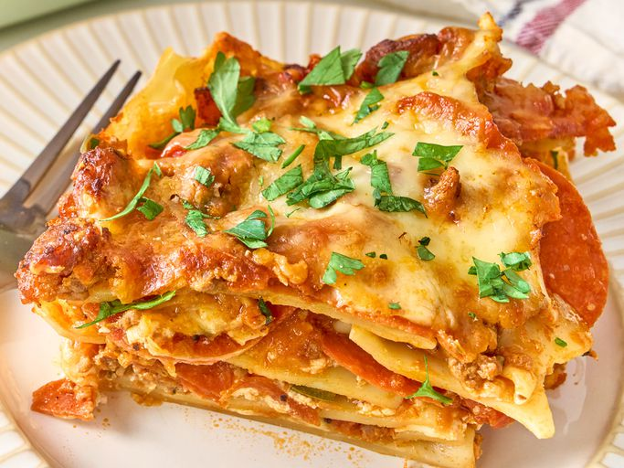

Cowboy Lasagna

This meaty cowboy lasagna, inspired by Trisha Yearwood's recipe, can
serve a crowd of cowboys. Pasta sheets are layered with cheese, ground
beef, pepperoni, and sausage. Jalapenos bring the heat.
Ingredients
- 1 tablespoon olive oil
- 1 pound ground sirloin
- 1 pound sage-flavored pork sausage
- 2 jalapeno peppers, seeded and chopped
- 1 onion, finely chopped
- 3 cloves garlic, minced
- 8 ounces pepperoni, roughly chopped
- 1 (15 ounce) can fire roasted diced tomatoes
- 1 (12-ounce) can tomato paste
- 1 teaspoon dried oregano
- 2 cups water
- salt and freshly ground black pepper to taste
- 1 pound lasagna noodles
- cooking spray
- 16 ounces ricotta cheese
- 16 ounces mozzarella cheese, shredded
- 2/3 cup grated Parmesan cheese
Directions
-
Heat oil in a large deep skillet over medium-high heat. Add ground
beef and sausage and cook, crumbling with a wooden spoon until
browned, 5 to 7 minutes. Add jalapeno, onion, and garlic and cook,
stirring often, until vegetables are softened, about 3 minutes. Add in
pepperoni, tomatoes, tomato paste, oregano, and water and stir until
well combined. Season to taste with salt and pepper. Bring to a
simmer, reduce heat and cook, uncovered, stirring occasionally while
pasta is prepared.
-
Preheat the oven to 350 degrees F (180 degrees C).
-
Bring a large pot of lightly salted water to a boil. Cook lasagna
noodles in the boiling water, stirring occasionally, until tender yet
firm to the bite, about 8 minutes. Drain.
-
Coat a 9x13-inch baking dish with cooking spray. Spread a thin layer
of sauce over the bottom of the prepared dish. Top with a layer of
lasagna noodles, 1/2 of ricotta, and 1/3 of mozzarella cheese.
Sprinkle with 1/3 of grated Parmesan cheese and 1/3 of sauce mixture.
Repeat that layer once more. Top with remaining sauce, mozzarella
cheese, and Parmesan.
-
Bake in the preheated oven until browned around the edges and bubbly,
about 40 minutes.